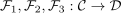
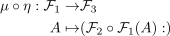

composition of natural transformations
1. Definition / Proposition
Let  be categories,
be categories,

be functors and natural transformations
Then the composition defined as
natural transformations
Then the composition defined as

Then the

Let be categories,

be functors and natural transformations
Then the composition defined as

Then the